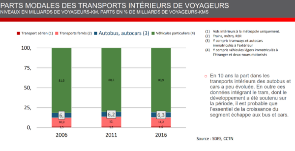

Concernant le transport intérieur de voyageur, on retrouve une concurrence avec les différents autres moyens de locomotions comme les trains, les avions et les véhicules particulier.
Cependant, on peut remarquer que la concurrence avec le secteur aérien, soit les déplacement par avion, est faible contrairement aux deux autres qui sont les déplacement par voies ferrées ou par transport particuliers. En revanche, la part dans les transports intérieurs, les autobus, n’a pas réellement eu d’évolution, cette part a augmenté d’environ 0,3 % sur une période de 10 ans. Contrairement au secteur ferroviaire qui a subit une augmentation de 2,1 % en 5 ans puis une diminution de 0,8 % de 2011 à 2016. La part d’utilisation des véhicules particuliers quant à elle subit une diminution, passée de 81,6 % en 2006 à 80,3% en 2011. Soit une perte de 1,3% en 5 ans.
